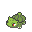
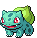
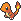
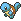

Kanto

Bulbasaur #001

Grama
Veneno
Há uma semente de planta em suas costas desde o dia que este pokémon nasce. A semente cresce lentamente conforme o pokemon evolui.

Charmander #004

Fogo
Um fogo arde na ponta da cauda fina deste Pokémon desde o seu nascimento. A chama pode ser usada como uma indicação da saúde e do humor de Charmander, queimando intensamente quando o Pokémon está forte, fracamente quando está exausto, balançando quando está feliz e brilhando quando está enfurecido.

Squirtle #007

Água
A casca de Squirtle é uma ferramenta útil. Ele pode se retirar para dentro da concha para proteção ou para dormir. A forma arredondada e ranhurada ajuda a reduzir a resistência à água, permitindo que o Pokémon nade em alta velocidade.